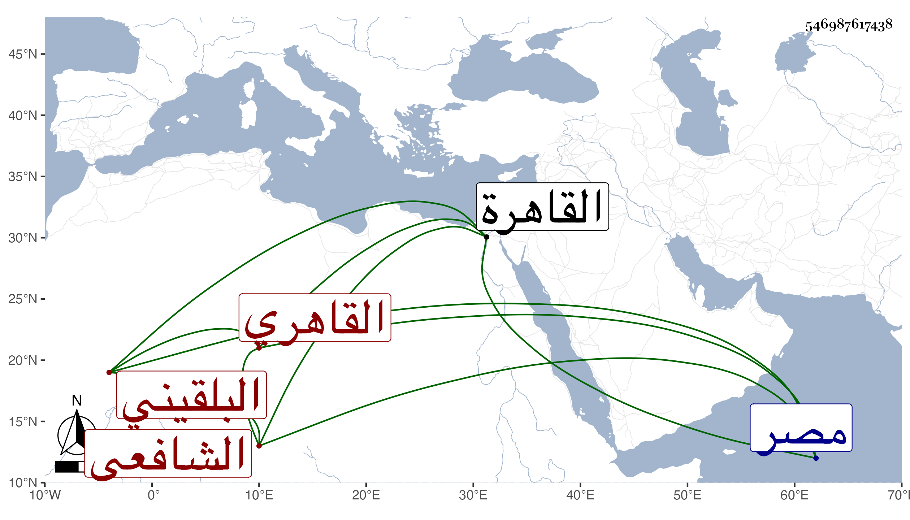

0902Sakhawi.DawLamic.ITO20230111-ara1.EIS1600.546987617438
Biography ID: 546987617438
1025
علي بن محمد بن عبد الرحمن بن عمر بن رسلان بن نصير العلاء أبو الحسن بن التاج أبي سلمة بن الجلال أبي الفضل بن السراج البلقيني الأصل القاهري الشافعي . ولد في رجب سنة أربع وثمانمائة بالقاهرة وحضر إليه جد والده السراج حينئذ فأذن في أذنه اليمنى وأقام في اليسرى وبرك عليه ، ونشأ في كنف أبيه فحفظ القرآن والعمدة والمنهاج الفرعي والأصلي وألفية النحو وربع التسهيل وبعض الروضة وقطعة صالحة من البخاري وغيرها وعرض على جده والولي العراقي وأبي هريرة بن النقاش والزين القمني وشيخنا وخلق وأخذ الفقه عن البرهان البيجوري والبرماويين والشهاب الطنتدائي وحضر دروس جده ورام أن يجعله قارئ درس الخشابية بين يديه فما قدر وقرأ المنهاج الأصلي عن القاياتي وأخذ النحو والصرف عن العز عبد السلام البغدادي وكذا عن البرهان بن حجاج الأبناسي ومن قبلهما عن الشطنوفي وقرأ على الشمس البوصيري في الجمل للزجاجي في فرائض المنهاج وسمع عليه غير ذلك وأذن له المجد البرماوي في الإقراء وكذا القاياتي ، واشتهر بسرعة الحفظ بحيث كان جده يناظر به في ذلك الهروي فيقول يذكرون عن حفظ الهروي وحفيدي هذا يحفظ كيت وكيت ، ولكن كانت فاهمته ... قاصرة ، ودرس الفقه بالجيهية برغبة والده له عنه وكذا استقر في الميعاد بها برغبة غيره وفي تدريس الفقه بالسكرية بمصر والإعادة فيه بالقبة المنصورية وفي الحديث بالقبة البيبرسية ثم رغب بعد عن ذلك كله وكتب بخطه أشياء والتقط ضوابط التدريب وغير ذلك ، وحج في حياة جده مع والده في سنة إحدى وعشرين وناب في القضاء عن شيخنا فمن بعده ، وكتب له شيخنا حين إذنه له ما نصه : أذنت له في ذلك لاستئهاله بالطريق الشرعي ، وكان كثير الميل إليه والمحبة وكذا كان العلاء زائد الحب فيه بحيث أنه في ختم ولد له لم يدع عم والده مع كونه كان بمدرستهم واقتصر على شيخنا ولازم مجالسه كثيرا في الدراية والرواية وكذا سمع على العلاء بن بردس وابن ناظر الصاحبة وابن الطحان وغيرهم كالشمس البرماوي والشهاب البطائحي وقارئ الهداية والجمال الكازروني بل والشرف ابن الكويك ، وشافهه بالإجازة ابن الجزري بل أجاز له خلق منهم عائشة ابنة ابن عبد الهادى أجاز لي وسمعت دروسه وفوائده ، وكان مفيدا متواضعا كثير التودد متكرما على نفسه وعياله لا يبقى على شيء راغبا في الانعزال محبا في الراحة وقد أثكل ولده الجلال عبد الرحمن الماضي وكف بأخرة وافتقر جدا وتعلل مدة ثم مات في ليلة الاثنين ثامن عشري شعبان سنة ثلاث وثمانين وصلى عليه بجامع الحاكم ودفن عند أخيه الشهاب أحمد بمدرستهم رحمه الله وإيانا وعفا عنه .
